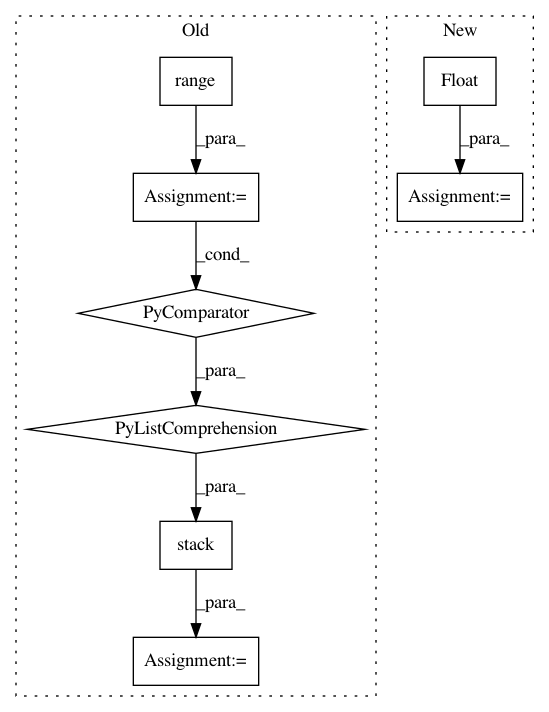

6ddf825a4aa1bcf3a35bba8d36bc433fe5ebaa39,torchsample/utils.py,,th_nearest_interp_3d,#Any#Any#,285
Before Change
zc.round().long()], 2)
// gather image values at coordinates
mapped_vals = torch.stack([th_gather_nd(input[i], coords[i])
for i in range(input.size(0))], 0)
return mapped_vals.view_as(input)
After Change
coords[:,1] = torch.clamp(coords[:,1], 0, input.size(2)-1).round()
coords[:,2] = torch.clamp(coords[:,2], 0, input.size(3)-1).round()
stride = torch.LongTensor(input.stride())[1:].float()
idx = coords.mv(stride)
input_flat = th_flatten(input)
In pattern: SUPERPATTERN
Frequency: 3
Non-data size: 8
Instances
Project Name: ncullen93/torchsample
Commit Name: 6ddf825a4aa1bcf3a35bba8d36bc433fe5ebaa39
Time: 2017-04-24
Author: ncullen@Nicks-MacBook-Pro.local
File Name: torchsample/utils.py
Class Name:
Method Name: th_nearest_interp_3d
Project Name: arraiy/torchgeometry
Commit Name: 7f0eb809f1509c452d85000fd002b12c22e358ca
Time: 2019-08-22
Author: ducha.aiki@gmail.com
File Name: kornia/filters/kernels.py
Class Name:
Method Name: gaussian
Project Name: ncullen93/torchsample
Commit Name: 15c7935788534423c3b22626fb1a6978a59878b6
Time: 2017-04-25
Author: ncullen@modv-vlan533.0658.apn.wlan.wireless-pennnet.upenn.edu
File Name: torchsample/utils.py
Class Name:
Method Name: th_nearest_interp_2d